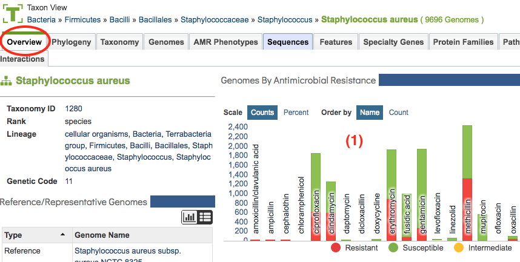
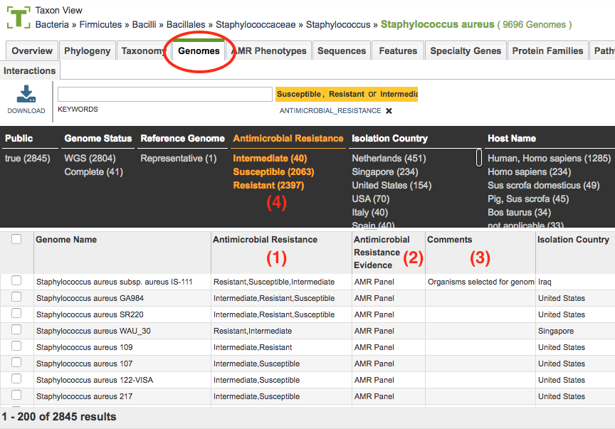

Antimicrobial Resistance Metadata¶
Genome-Level Antimicrobial Resistance (AMR)¶
Genome-level bacterial AMR metadata include data from GenBank, from the NIAID-funded Genomic Centers for Infectious Diseases, and from sequencing read data generated as part of AMR-related studies sequencing projects, typically curated from SRA. These data include panel data for antibiotics and chemicals. These data are accessible at different levels of detail via multiple views/tabs, including Taxon Overview, Genomes, AMR Phenotypes, as well as for individual genomes, described in the following sections.
The Taxon Overview tab (shown below) provides an interactive summary bar chart showing the relative genome counts by resistance type (defined in Antimicrobial Resistance section below) and antibiotic. Clicking a bar in the chart filters to the corresponding list of AMR Phenotypes by genome for that resistance category and antibiotic.

From the Genomes tab (shown below) bacterial metadata includes information on Antimicrobial Resistance, Antimicrobial Resistance Evidence, and other related information.

(1) Antimicrobial Resistance metadata field. This field shows genomes that have been specifically tested against certain antibiotics and the resulting phenotype from that test. Note that a genome can have multiple antibiotic phenotypes, such as being resistant to one drug and susceptible to another. Values in this field include the following:
‘Resistant’
‘Susceptible’
‘Intermediate’
(2) Antimicrobial Resistance Evidence metadata field. This field provides the form of evidence used to determine the value in the corresponding Antimicrobial Resistance metadata field. Values in this field include the following:
‘Phenotype.’ Genomes in this category were assigned their resistance category based on phenotype information provided by source data, metadata and/or publication. For instance, the AMR phenotype may have been determined as MRSA or MSSA. This phenotype data is available as well.
‘AMR Panel.’ Some genomes have been tested against a panel of antibiotics, with the results of the screening reported in a table using either a specific designation (such as ‘Susceptible,’ ‘Resistant,’ or ‘Intermediate’), or the minimum inhibitory concentration (MIC). See AMR Phenotypes below.
‘Computational Prediction.’ Some genomes have been predicted by machine-learning based classifiers built on experimentally verified phenotypes. The prediction methodology is described in PMC4906388.
(3) ‘Comment.’ The basis for the resistance category for these genomes can be found in the comment metadata field. This information may have come from the comment field at GenBank, or in a comment field from data provided by the data generator, or sample provider. In some cases, the comment has been provided by literature-based curation by the BV-BRC team; in these cases, a link to the corresponding publication is also available.
The Antimicrobial Resistance metadata field and the Antimicrobial Resistance Evidence metadata field are available as filterable facets (4) on the Genome list pages, allowing sorting on the terms ‘Susceptible’, ‘Resistant’ or ‘Intermediate’ to locate the genomes tagged with that information. In addition, filters are available for the source of the information, which provides the ability, for example, to only include genomes that have complete AMR panel information and exclude genomes where there is only a comment.